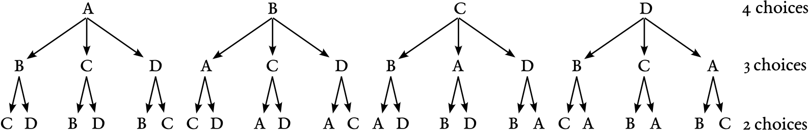

Chapter 4 Notes: Discrete Distributions
Discrete Random Variables
A random variable assigns numbers to outcomes in the sample space.
Example:
- Number of children with retinitis pigmentosa
- Number of individuals with leukemia
- etc…
Basically, an event that is a number.
Discrete random variable: Can count them (but may be infinite).
- Typically \(0, 1, 2, 3, \dots\)
Continuous random variable: Cannot count them.
- Typically some interval \((-\infty, \infty)\), \([0,1]\), etc.
Denote random variables with capital letters \(X, Y, Z\), etc.
A probability mass function (PMF) assigns a probability to a possible value \(r\). Denote this probability by \(P(X = r)\).
- Function of \(r\), not \(X\). \(X\) is used to denote the random variable.
Example: Let \(X =\) number of patients in a trial of 4 who have improved blood pressure.
- \(P(X = 0) = 0.008\)
- \(P(X = 1) = 0.076\)
- \(P(X = 2) = 0.265\)
- \(P(X = 3) = 0.411\)
- \(P(X = 4) = 0.240\)
\(0 \leq P(X = r) \leq 1\) for all \(r\)
\(\sum_r P(X = r) = 1\)
- Sum over all possible \(r\) is 1.
Expected Value: Measure of center of a PMF (also known as mean).
\[ E(X) = \sum r \cdot P(X = r) = \mu \]
- Again, summing over all possible \(r\).
Example:
\[ E(X) = 0 \cdot 0.008 + 1 \cdot 0.076 + 2 \cdot 0.265 + 3 \cdot 0.411 + 4 \cdot 0.240 = 2.8 \]
Average value of \(X\) across many trials.
Note: \(\mu\) is a population parameter, not a statistic, which is a function of observed data.
Example: Across many trials, we might see:
\(x\) freq (aka times seen) 0 0 1 9 2 24 3 48 4 19 \[ \bar{X} = 0 \cdot 0 + 1 \cdot \frac{9}{100} + 2 \cdot \frac{24}{100} + 3 \cdot \frac{48}{100} + 4 \cdot \frac{19}{100} = 2.77 \]
Variance: Measure of spread.
\[ \text{Var}(X) = \sum_r (r - \mu)^2 \, P(X = r) = \sigma^2 \]
\(SD(X) = \sqrt{\sigma^2} = \sigma\)
Note: \(\text{Var}(X) = E(X^2) - E(X)^2 = \sum_r r^2 \, P(X = r) - \left(\sum_r r \, P(X = r)\right)^2\)
Larger \(\sigma\) means more variable.
Cumulative Distribution Function (CDF):
\[ F(x) = P(X \leq x) = \text{Probability } X \text{ is less than or equal to } x \]
Example: Hypergeometric distribution
- \(F(0) = 0.008\)
- \(F(1) = 0.008 + 0.076\)
- \(F(2) = 0.008 + 0.076 + 0.265\)
- \(F(3) = 0.008 + 0.076 + 0.265 + 0.411\)
- \(F(4) = 0.008 + 0.076 + 0.265 + 0.411 + 0.240\)
Useful for probability calculation:
\[ P(1 \leq X \leq 3) = P(X \leq 3) - P(X \leq 0) \]
Exercise: \(X =\) number of boys in a family of 4
\(r\) \(P(X = r)\) 0 \(\frac{1}{16}\) 1 \(\frac{1}{4}\) 2 \(\frac{3}{8}\) 3 \(\frac{1}{4}\) 4 \(\frac{1}{16}\) Calculate \(E(X)\), \(SD(X)\), \(F(X)\)
Some distributions are seen in real data over and over again:
- Binomial: count out of \(n\)
- Poisson: count during some time interval
These have specific PDFs/CDFs.
We need to know about permutations/combinations to understand them.
Number of permutations of \(n\) things taken \(k\) times:
\[ {}_nP_k = n(n-1)(n-2) \dots (n-k+1) = \frac{n!}{(n-k)!} \]
Example: Individuals \(= A, B, C, D\)
\[ {}_4P_2 = \frac{4!}{2!} = \frac{4 \cdot 3}{1} = 12 \]
Possible permutations:
- \(A, B\)
- \(A, C\)
- \(A, D\)
- \(B, A\)
- \(B, C\)
- \(B, D\)
- \(C, A\)
- \(C, B\)
- \(C, D\)
- \(D, A\)
- \(D, B\)
- \(D, C\)
\({}_4P_3\) Example:
- Tree diagram shows all possible arrangements of \(A, B, C, D\) taken 3 at a time:

What if order does not matter? For example, \(\{A, B, C\} = \{C, B, A\}\).
The number of combinations of \(n\) things taken \(k\) at a time:
\[ {}_nC_k = \binom{n}{k} = \frac{n!}{k!(n-k)!} \]
There are \(\frac{n!}{(n-k)!}\) permutations of size \(k\).
Each of those shares elements with \(k! = k P_k\).
Example: \(A, B, C, D \quad {}_4C_3\)
- Possible combinations:
- \(A, B, C = A, C, B = B, A, C = B, C, A = C, A, B = C, B, A = 3!\)
- Possible combinations:
Divide by \(k!\) to get the number of combinations.
Binomial Distribution
- \(n\) trials
- Outcome of each trial is “success” or “failure”
- \(P(\text{success}) = p\) for each trial
- Trials are independent
Let \(X =\) number of successes
Then \(X \sim \text{Bin}(n, p)\) (Distributed as Binomial)
Example: White blood count
Let \(X =\) number of neutrophils out of 100 white blood cells
\(P(\text{neutrophile}) = 0.6\)
\(\Rightarrow X \sim \text{Bin}(100, 0.6)\)
If \(X \sim \text{Bin}(n, p)\) then
\[ P(X = r) = \binom{n}{r} p^r (1 - p)^{n - r} \]
Example: Suppose \(X \sim \text{Bin}(3, 0.3)\)
\(P(X = 2) = P(\text{2 successes and 1 failure})\)
\(P(SSF) = P(SF S) = P(F SS) = p^2 (1 - p)\)
So \(P(X = 2) = 3 \, p^2 (1 - p) = \binom{3}{2} p^2 (1 - p)\)
Claim: # of ways to order \(r\) successes and \(n - r\) failures is \(\binom{n}{r}\)
- Proof: Position \(1, 2, \dots, n\). Choose \(r\) out of these to be \(S\), rest are \(F\)
Example: \(X =\) number of boys out of 5 children, \(p = 0.51\)
- \(P(X = 2) = \binom{5}{2} (0.51)^2 (0.49)^3 = 0.306\)
\[ \binom{5}{2} = \frac{5 \cdot 4}{2 \cdot 1} = 10 \]
CDF:
\[ P(X \leq x) = \sum_{r=0}^{x} P(X = r) = \sum_{r=0}^{x} \binom{n}{r} p^r (1 - p)^{n - r} \]
- No simpler form.
Mean:
\[ E(X) = \sum_{r=0}^{n} r \binom{n}{r} p^r (1 - p)^{n - r} = n \, p \]
- Expected number of successes \(=\) number of trials \(\times P(\text{success})\)
Variance:
\[ \text{Var}(X) = n \, p (1 - p) \]
\(n \uparrow \Rightarrow \text{Var} \uparrow\)
Variance is highest at \(p = 0.5\), smallest at \(p = 0\) or \(1\).
-
dbinom()= \(P(X = r)\)pbinom()= \(P(X \leq x)\)qbinom()= quantilerbinom()= random generation
Poisson Distribution
Counts of rare events over some period of time or space.
Example: # of typhoid cases in a year.
Example: # of bacterial colonies on an agar plate.
Assume:
- For small time interval \(\Delta t\), \(P(\text{success in } \Delta t)\) is about \(\lambda \Delta t\) (for some \(\lambda\)).
- \(P(\text{more than 2 successes in } \Delta t) \approx 0\)
- Stationarity: \(P(\text{success})\) about the same for all time intervals.
- Independence: One success has no bearing on any other success.
- Violated, e.g., in epidemics.
Then \(X =\) number of “successes” in time \(t\)
- \(X \sim \text{Pois}(\mu)\) such that \(\mu = \lambda t\)
\[ P(X = k) = \frac{e^{-\mu} \, \mu^k}{k!} \]
Note:
- If \(X \sim \text{Pois}(\mu)\) over time \(t\) then \(X \sim \text{Pois}(c \mu)\) over time \(ct\).
Example:
\(X =\) number of typhoid deaths in 1 year
\(X \sim \text{Pois}(4.6)\)
Let \(Y =\) number of typhoid deaths in half a year
\(Y \sim \text{Pois}\left(\frac{4.6}{2}\right) = \text{Pois}(2.3)\)
Example:
\(X =\) number of bacteria colonies in 100 cm²
\(X \sim \text{Pois}(2)\)
\(Y =\) number of bacteria colonies in 1000 cm²
\(Y \sim \text{Pois}(20)\)
Mean: If \(X \sim \text{Pois}(\mu)\), \(E(X) = \mu\)
Variance: \(\text{Var}(X) = \mu\)
If \(X \sim \text{Pois}(\lambda_1)\) and \(Y \sim \text{Pois}(\lambda_2)\) (and are independent), then \(X + Y \sim \text{Pois}(\lambda_1 + \lambda_2)\)
- Not generally true for other distributions (e.g., not for binomial).
Relation to Binomial:
- If \(X \sim \text{Bin}(n, p)\)
- \(n\) large \((> 100)\)
- \(p\) small \((< 0.01)\)
- \(np\) intermediate
- Then \(X \approx \text{Pois}(np)\)
- (Approximate)
- If \(X \sim \text{Bin}(n, p)\)
This is used to justify Poisson in cases where we know \(n\) is large, but we don’t know it exactly.
Example: \(X =\) number of RNA molecules of a gene observed (on the order of 100)
- We don’t know \(n\) but know it’s large.
- We don’t know \(p\) but we know it’s small (because \(X \approx 100\)).
- Use Poisson to model \(X\)!
Exercises (4.24–4.29)
number of episodes for 1 child to have otitis media (ear disease) in 1 year is \(\text{Pois}(1.6)\)
4.24: What is the probability of getting 3 or more episodes in the first 2 years of life?
- 4.25: What is the probability of not getting any in the 1st year?
- 4.26: Probability two siblings will both have 3 or more episodes in the first year of life?
- 4.27: What is the probability exactly 1 sibling will have 3 or more episodes (out of 2)?
- 4.28: What is the probability neither will have 3 or more episodes in the first 2 years?
- 4.29: What is the expected number of siblings in a 2-sibling household who will have 3 or more episodes in the first two years?